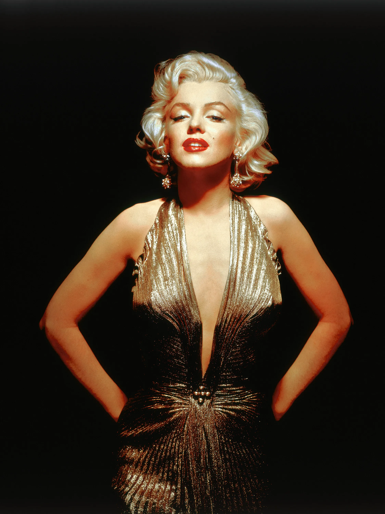

Curriculum Vitae

Marilyn Monroe
Resumen
Marilyn Monroe fue una actriz, cantante y modelo estadounidense. Famosa
por interpretar personajes cómicos de «rubia explosiva», se convirtió en
uno de los símbolos sexuales más populares de la década de 1950 y
principios de los 60, así como en un emblema de la revolución sexual de la
época.
Datos Personales
- Nombre: Marilyn Monroe
- Lugar de Nacimiento: Los Ángeles, California, Estados Unidos
- Fecha de nacimiento: 01 e Junio de 1926
Premios y Reconocimientos
Monroe completó 29 películas en su carrera. En 1962, se encontraba
filmando su trigésima película, Something's Got to Give, cuando fue
despedida por el estudio; murió antes de que se completara con otros el
papel
- Premio Henrietta: Mejor personalidad de taquilla (1951)
- Premio Photoplay: Estrella en ascenso más rápida de 1952 (1952)
- Premio Look: La recién llegada más prometedora de 1952 (1952)
- Premio Henrietta: Película mundial favorita: mujer (1953)
- Premio Photoplay: Estrella femenina más popular (1953)
- Premio Photoplay: Mejor actriz (1954)
- Premio BAFTA: Mejor actriz extranjera (1956)
-
Premio Globo de Oro: Mejor actriz de cine en comedia o musical (1956)
- Premio BAFTA: Mejor actriz extranjera (1958)
- Premio David di Donatello: Mejor actriz extranjera (1958)
- Premio Laurel: Mejor actuación de comedia femenina (1959)
- Globo de Oro: Mejor actriz de cine en comedia o musical (1960)
- Premio Laurel: Mejor actuación de comedia femenina (1960)
- Premio Henrietta: Película mundial favorita: mujer (1962)
Fuente:
Wikipedia
Referencias: Portafolio